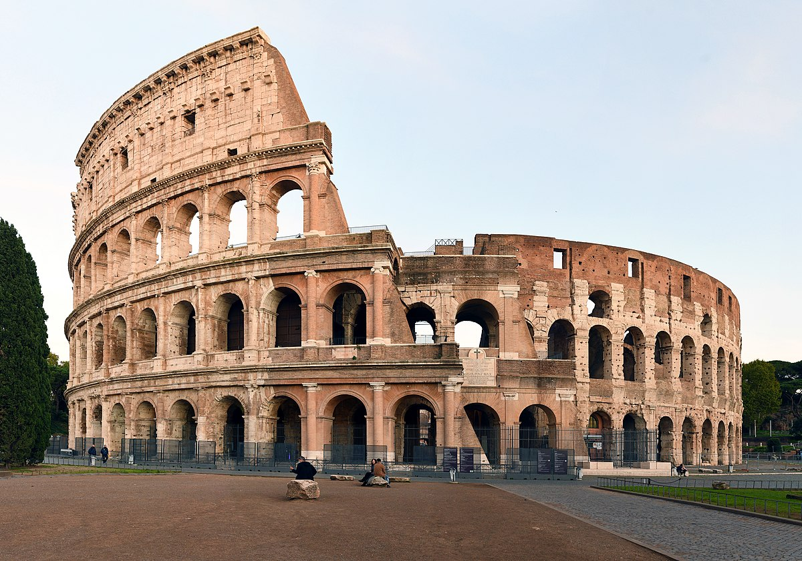
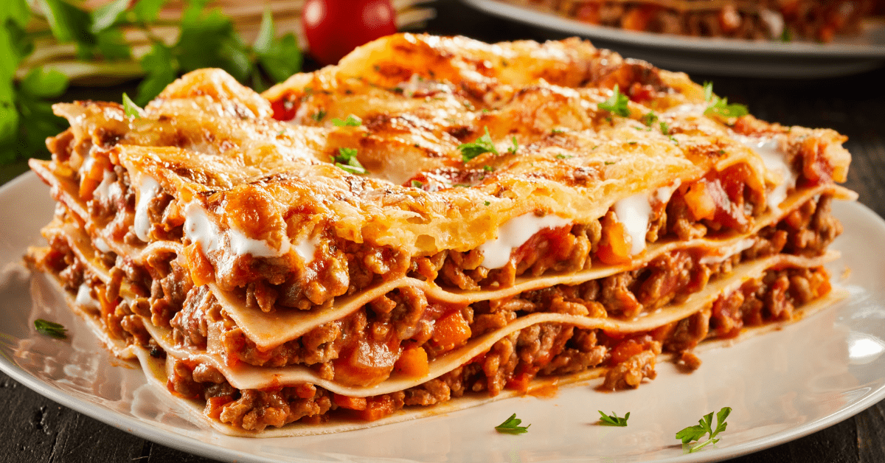

იტალია (ოფიციალური სახელწოდება: იტალიის რესპუბლიკა) მდებარეობს სამხრეთ ევროპაში.
იგი მსოფლიოს ერთ-ერთი უძველესი კულტურისა და ცივილიზაციის ცენტრად ითვლება.
დედაქალაქი: რომი
ოფიციალური ენა: იტალიური
ფართობი: დაახლოებით 301,000 კმ²
მოსახლეობა: 60 მილიონზე მეტი ადამიანი
ვალუტა: ევრო (€)
იტალია არის „ჩექმის ფორმის“ ნახევარკუნძული, რომელიც ხმელთაშუა ზღვაშია განთავსებული. მას ესაზღვრება საფრანგეთი, შვეიცარია, ავსტრია და სლოვენია. ქვეყნის ტერიტორიაზე მდებარეობს ორი დამოუკიდებელი სახელმწიფო — ვატიკანი და სან-მარინო. იტალია ცნობილია ალპებით, ვულკანებით (ვეზუვი, ეტნა) და მრავალფეროვანი სანაპიროებით.
იტალია არის რომის იმპერიის სამშობლო, რომელმაც უდიდესი გავლენა მოახდინა მსოფლიო ცივილიზაციაზე. შუა საუკუნეებში ფლორენცია, ვენეცია და მილანი ხელოვნებისა და მეცნიერების ცენტრები იყვნენ. რენესანსის ეპოქამ (ლეონარდო და ვინჩი, მიქელანჯელო) იტალია მსოფლიო კულტურის ეპიცენტრად აქცია. თანამედროვე იტალია ერთიან სახელმწიფოდ XIX საუკუნეში ჩამოყალიბდა.
იტალია ერთ-ერთი ყველაზე განვითარებული ქვეყანაა ევროკავშირში. მისი ეკონომიკა ძლიერია ტურიზმის, მოდისა და დიზაინის, ავტომობილების (Ferrari, Lamborghini, Fiat), ასევე ღვინისა და სოფლის მეურნეობის მიმართულებით.
 